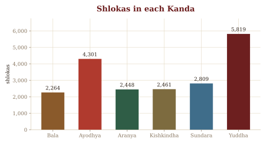
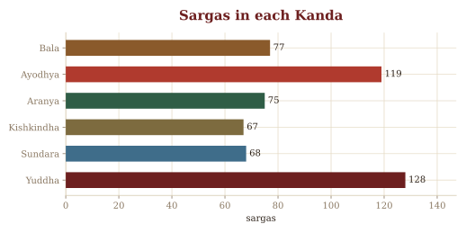
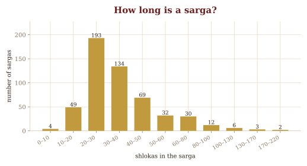
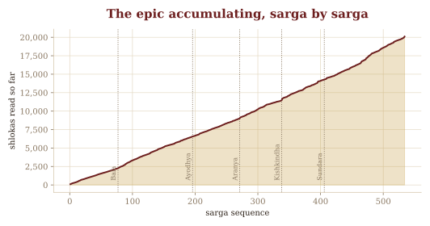

The epic in numbers
One story,
twenty thousand verses.
Six kandas, 534 sargas and 20,102 shlokas — measured from the verse locator on every source page, not from the printed chapter headings. Here is the shape of the Ramayana as this edition holds it.
- 6Kandas
- 534Sargas
- 20,102Shlokas
- 37.6Average per sarga

Yuddha Kanda is the heaviest book at 5,819 shlokas (28.9%), while Bala Kanda is the lightest at 2,264 (11.3%). Ayodhya is not far behind the war, and it is the kanda with the most sargas after Yuddha. The average sarga is 37.6 shlokas — a comfortable evening's reading.
| Kanda | Sargas | Shlokas | Share | Avg | Weight |
|---|---|---|---|---|---|
| Bala Kanda | 77 | 2,264 | 11.3% | 29.4 | |
| Ayodhya Kanda | 119 | 4,301 | 21.4% | 36.1 | |
| Aranya Kanda | 75 | 2,448 | 12.2% | 32.6 | |
| Kishkindha Kanda | 67 | 2,461 | 12.2% | 36.7 | |
| Sundara Kanda | 68 | 2,809 | 14.0% | 41.3 | |
| Yuddha Kanda | 128 | 5,819 | 28.9% | 45.5 | |
| Total | 534 | 20,102 | 100% | 37.6 |


Longest sargas
| Sarga | Opening | Shlokas |
|---|---|---|
| Sundara 1 | This first chapter of Sundara Kanda describes Hanuma's preparations to cross… | 210 |
| Yuddha 67 | Restored to confidence by Angada, all the monkeys return to the battle-field | 179 |
| Sundara 58 | Jambavan, seated along with the monkey-troops… | 166 |
| Yuddha 59 | Feeling desperate at the death of Prahasta, Ravana himself appears… | 146 |
| Kishkindha 1 | Rama in his pursuit to regain Seetha reaches Pampa Lake along with Lakshmana | 131 |
| Yuddha 111 | Mandodari stares at the dead body of Ravana and laments… | 128 |
| Yuddha 128 | At the request of Bharata to take back the kingdom of Ayodhya… | 125 |
| Yuddha 4 | After hearing the report of Hanuma, Rama fixes an auspicious hour… | 124 |
| Yuddha 71 | Seeing Atikaya, the colossal demon, coming towards him on a chariot… | 116 |
| Ayodhya 12 | Dasaratha is shocked by the strange wishes of Kaikeyi… | 114 |
Shortest sargas
| Sarga | Opening | Shlokas |
|---|---|---|
| Sundara 60 | Angada suggest with enthusiasm that Seetha must be restored… | 6 |
| Sundara 8 | This chapter describes Pushpaka in glorious and amazing detail | 7 |
| Sundara 29 | Seetha experiences some good omens as follows; Her left eye… | 8 |
| Ayodhya 102 | Bharata replies that it is an established practice for the eldest son… | 9 |
| Ayodhya 98 | Bharata instructs Shatrughna and Guha along with some troops each to search… | 13 |
| Kishkindha 47 | Search for Seetha failed in east, north, and west directions | 14 |

Read in sequence, the Ramayana gathers slowly. Bala lays the foundation in 2,264 shlokas; Ayodhya more than doubles it; the forest and Kishkindha move at a walking pace; Sundara is a single, concentrated leap; and then Yuddha arrives like a monsoon.
A note on the count. This edition covers the six kandas published on valmikiramayan.net: 20,102 shlokas. The traditional seven-kanda Ramayana adds Uttara Kanda, which is not part of this source; editions that include it are usually cited at roughly 24,000 shlokas.
Method & data
What is complete, what is approximate, and how the numbers were obtained.
| Kanda | Shlokas | Devanagari | Translated | Coverage |
|---|---|---|---|---|
| Bala Kanda | 2,264 | 2264 | 2032 | 89.8% |
| Ayodhya Kanda | 4,301 | 4297 | 4002 | 93.0% |
| Aranya Kanda | 2,448 | 2446 | 2225 | 90.9% |
| Kishkindha Kanda | 2,461 | 2459 | 2237 | 90.9% |
| Sundara Kanda | 2,809 | 2809 | 2530 | 90.1% |
| Yuddha Kanda | 5,819 | 5819 | 5228 | 89.8% |
Every Sanskrit page carries a Verse Locator table whose links point to #Verse1, #Verse2 and so on. The number of distinct locator targets is the verse count used here. The inline verse references on the page (`|| 2-85-1`) are not reliable enough to count with: some pages shift a sarga by one, number the kanda differently, or group several verses under a single reference.
The source pages occasionally group two or three shlokas under one translation, or leave a translation blank when the verse is a continuation. In those cases the Devanagari and IAST are still present and are shown in full; the English note appears on the first verse of the group. Overall, 90.8% of shlokas carry a translation.
Character mentions are counted on the Devanagari text using name stems and common epithets — for example, Rama is counted for राम, राघव, रघुनन्दन and other names. Colophons and the Gayatri appendix are excluded. Counts are best read as relative presence, not as a definitive index: a verse may name a character several times, and some epithets are shared.